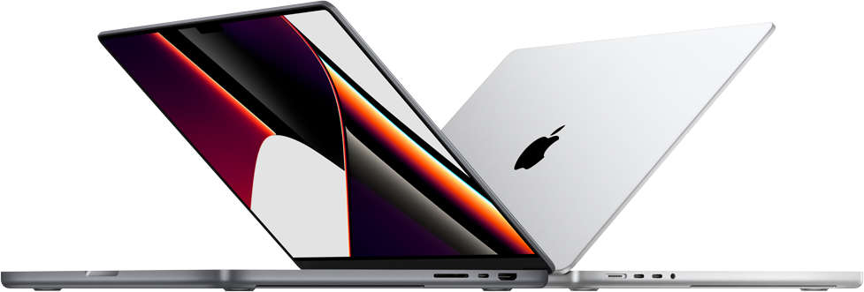

ChangeLogoMac
Illuminate Your MacBook: Customizable Logo Backlighting Program
 Download Mac App
Download Mac App
Illuminate Your MacBook: Customizable Logo Backlighting Program
Download Mac App
Welcome to our website, where we present a program specifically designed for MacBook owners. Our unique program allows you to enable the backlighting on your MacBook's logo and change its color, creating amazing effects and customizing it to match your mood or style.

We understand that the MacBook is not only a powerful tool for work and entertainment but also a stylish accessory that expresses your individuality. Our program helps you unleash your creativity and add a touch of magic to your everyday life.
With our program, you have full control over the backlighting of your MacBook logo. You can choose from a wide range of colors, including classic shades, vibrant and saturated colors, or even create your own custom color schemes. Thanks to our intuitive and user-friendly interface, you can easily customize your backlighting and achieve the desired effect with just a few clicks.
Our program also offers several modes of operation to further customize your visual experience. You can choose a constant backlighting mode, where your logo will continuously glow in the selected color, or configure a pulsating mode that creates a pulsating effect, adding dynamism to the overall appearance of your MacBook.
We understand that you may also be interested in synchronizing the backlighting with other elements of your workspace or music rhythms. That's why our program supports synchronization with external devices and software, allowing you to create even more stunning effects and interactions.
Whether you are a designer, developer, student, or simply a MacBook enthusiast, our program provides you with new possibilities for customization and personalization of your device. You can create unique visual designs and share them with others on social media or forums, inspiring fellow users.
Our developers are constantly working on updates and adding new features to ensure the best user experience. We value your feedback and suggestions to meet your needs and expectations.